Crux Intelligence · Dec 2023
Key Driver Analysis — from correlation scores to dollar impact
Replacing an unintuitive correlation model with a waterfall visualisation that tells users exactly how much each factor moved the needle — in money, not abstract scores.
01 — Context
Owning data visualisations at a BI tool
Crux Intelligence is a Business Intelligence tool that helps companies make better decisions from their data. The primary way users consume that data is through visualisations — so getting them right matters enormously.
At Crux, users could analyse any metric and explore the wheres and whys behind it. The "Drivers" feature was the engine for that — designed to explain what factors caused a number to go up or down. This project was about replacing the first version of Drivers with something that actually worked for users.
02 — The Problem with Drivers v1
Correlation scores told users what happened. Not what to do about it.
Imagine you sell water bottles. Your blue one's sales have dropped this month. You know what happened — but you need to know why, so you can act on it.
Drivers v1 answered that question using correlation — assigning each potential factor a score between −1 and +1. Inflation at −0.7 meant it was negatively correlated with sales. Instagram ads at +0.9 meant more spend led to more sales.
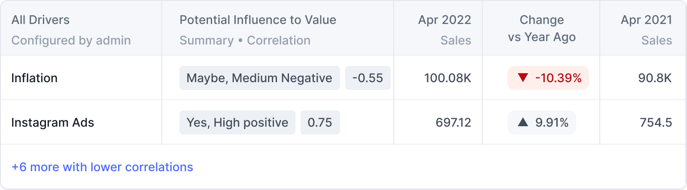
Drivers v1 in the product — correlation scores surfaced alongside raw sales numbers. Users saw "Maybe, Medium Negative" and a score of −0.55 and had no idea what to do next.

How correlation was supposed to work — but even this explanation graph confused users in testing
Drivers 1.0 — Correlation
Showed users a score from −1 to +1 for each factor. In theory, the closer to ±1, the stronger the relationship.
Drivers 2.0 — Key Driver Analysis
Shows users exactly how much money each factor added or removed from a metric. Concrete, actionable, and immediately understood.
The problem was that correlation scores just didn't land. User research revealed a painful pattern:
- 1. Users rarely looked at the correlation score in the first place.
- 2. When they did look, they didn't understand what the number meant.
- 3. When they did understand it — they didn't know what to do with the information.
- 4. Correlation also missed real impact: a factor could still significantly move sales even with a low score, if the metric fluctuated frequently.
People understand money a lot more easily than they understand correlation numbers between −1 and +1. "You made $900K because you decreased the price" is infinitely more useful than a score of 0.74.
03 — Design Brief
What an average business user needs to walk away knowing
Before jumping into explorations, I defined what the visualisation needed to communicate clearly to a non-technical user:
What contributed?
All the factors that caused an increase or decrease in a given metric (e.g. sales). The full picture, not just the biggest ones.
How much did it contribute?
The dollar impact — not a relationship score. How much money was added or lost because of each factor.
Why visualisation over text? People resist dense blocks of information. A well-designed visualisation is far more efficient at telling a story and letting users find what they need quickly.
04 — Explorations
Starting low-fidelity, adding complexity as confidence grew
My guiding principle throughout every exploration: "How is this helping the user consume the information presented?" Every format was evaluated against that question.
Table
The lowest-fidelity option. Spends this year vs. last year, with a change column. You can see the data — but it neither aids comparison between contributors nor gives any visual sense of magnitude or direction.
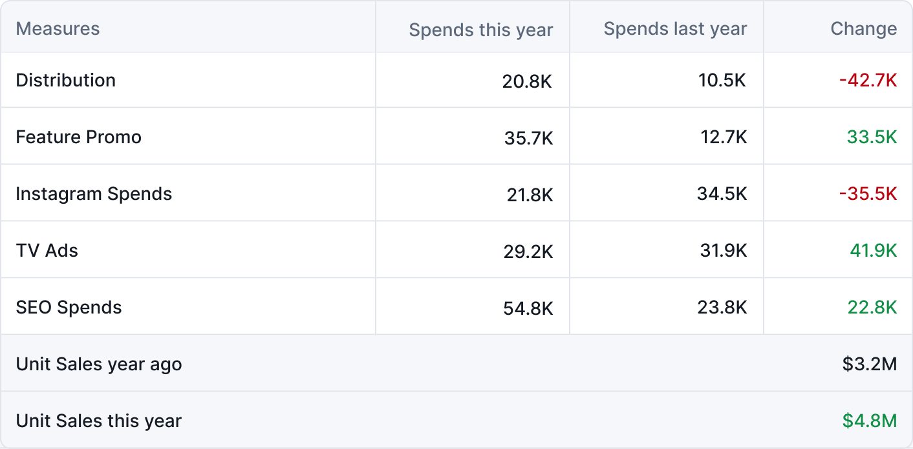
Simple breakdown chart
Added a visual breakdown of Unit Sales and its contributors — green for positive, red for negative. Better, but comparison between contributors still required close reading. The descending order helped slightly.
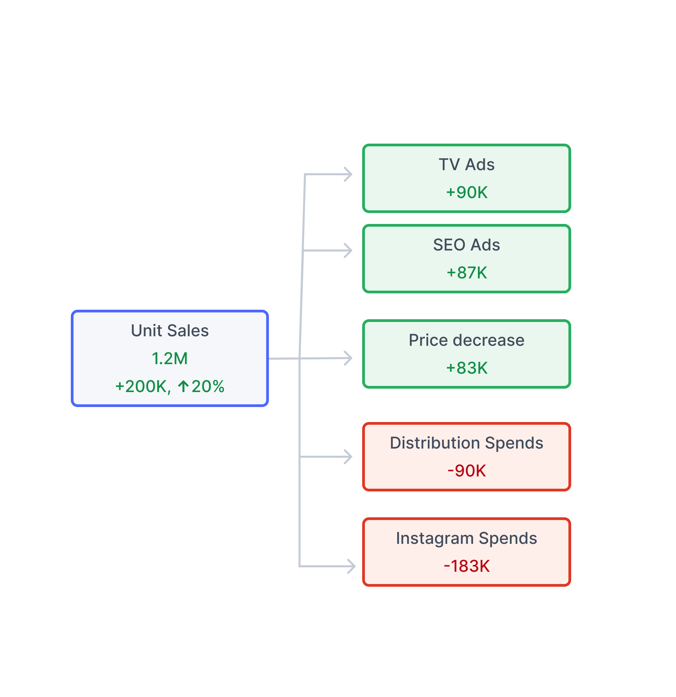
Indicator — contributors on a path
Placed contributors as dots on an axis with up/down arrows. Good at showing direction — positive or negative — but failed to show how they accumulated into the total change. The connected path also implied a false chronological order.
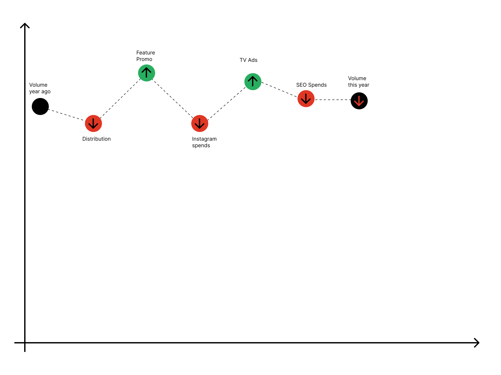
Column chart — first waterfall attempt
Moved to an axis-based column chart. Positive and negative contributors became clearly visible and magnitude appeared in column height. Much better at showing accumulation — but the mixed order of positive/negative still implied a sequence that wasn't there.
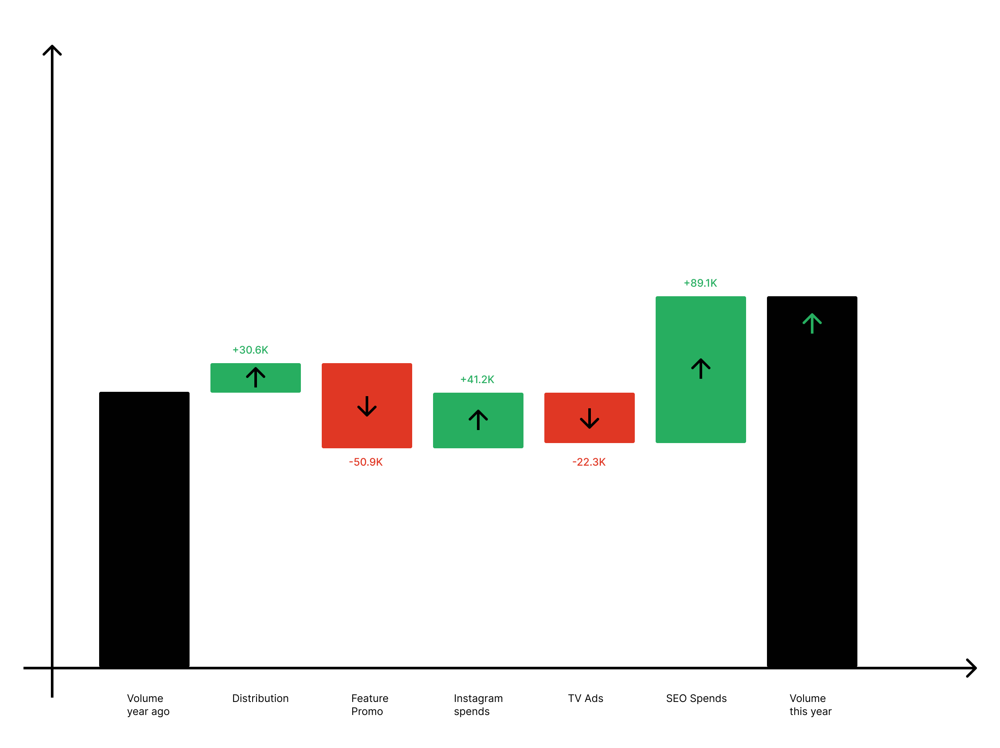
Radial / arc chart
An unconventional take — contributors shown as arc segments radiating from a central metric. Visually striking, but it scored worst on approachability. Business users weren't familiar with this format and had to work hard to read it.
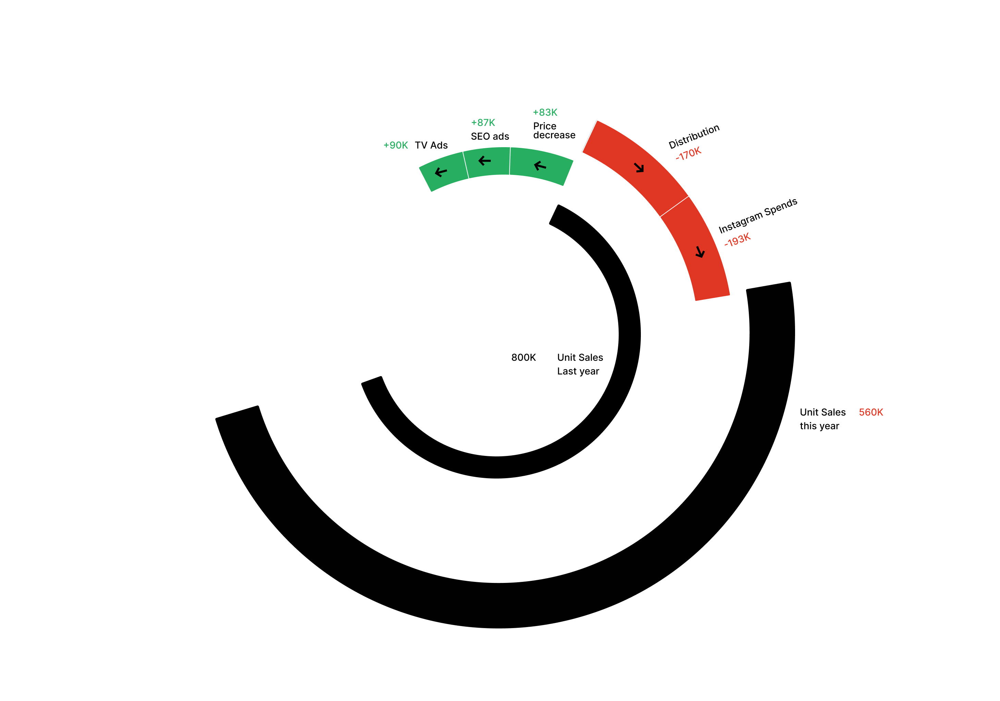
Waterfall chart
Familiar to business users, efficient at showing positive vs. negative contributors side by side, and naturally communicates how everything accumulates into a final result. After further iteration on layout and grouping, this became the solution.
05 — Final Decision
Why the waterfall chart won
Familiarity. Business users already know what a waterfall chart is. That recognition reduces cognitive load before they've read a single label.
Efficient positive/negative breakdown. Green columns go up, red columns go down. Directionality is immediate and intuitive.
Shows accumulation. Users can see that all positive and negative contributors stack together to produce the final change — the "so what" is built into the chart shape.
Grouping removes false ordering. Grouping positive contributors together and negative contributors together makes clear there's no chronological sequence — they're parallel causes, not steps in a chain.
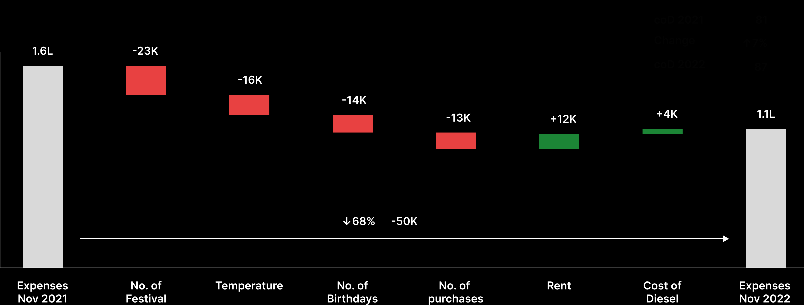
Wireframe of the final waterfall — positive contributors grouped left, negative right, accumulating to the end result
The final design pairs the visualisation with a natural language explanation — a plain-text breakdown beneath the chart that helps users who don't immediately read charts understand what they're looking at.
06 — UI Explorations & In Context
From wireframe to product
With the waterfall format settled, the work shifted to the UI layer — translating the wireframe into a polished, product-grade component that lived inside the Crux dashboard.
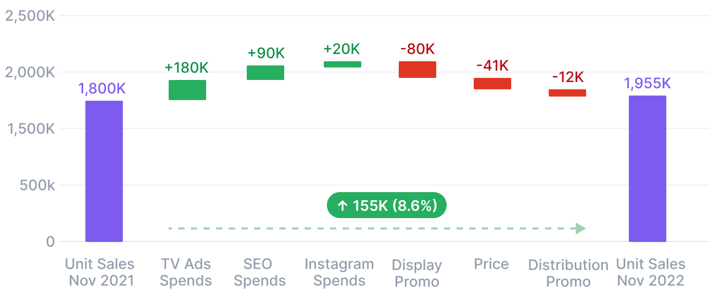
First UI pass — waterfall with dashed connecting arrow and the change value floating between the reference columns
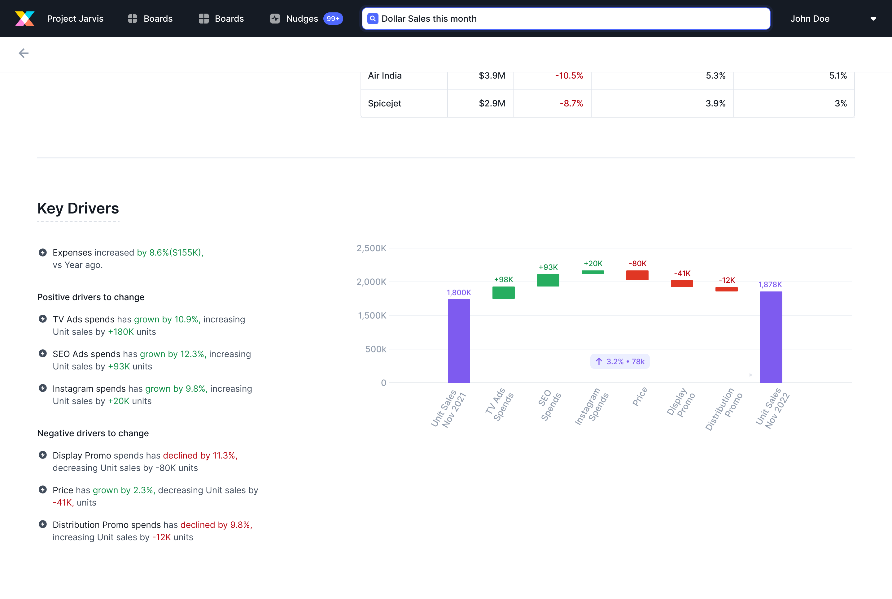
In context — Key Drivers panel inside the Crux product, with the natural language explanation on the left and the waterfall on the right
07 — Iteration
The first test revealed two invisible problems
The first iteration looked clean, but testing showed two issues users couldn't articulate — they just felt confused by the chart without knowing why.
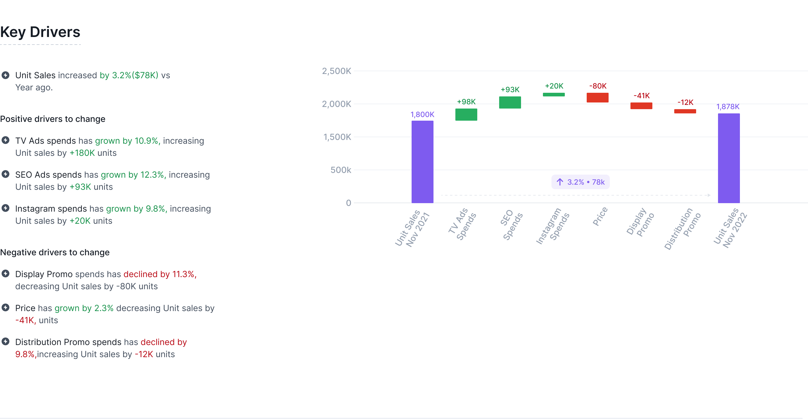
First iteration — the dashed arrow connecting the purple columns wasn't visible enough, and the floating change values felt disconnected
What changed between iteration 1 and the final
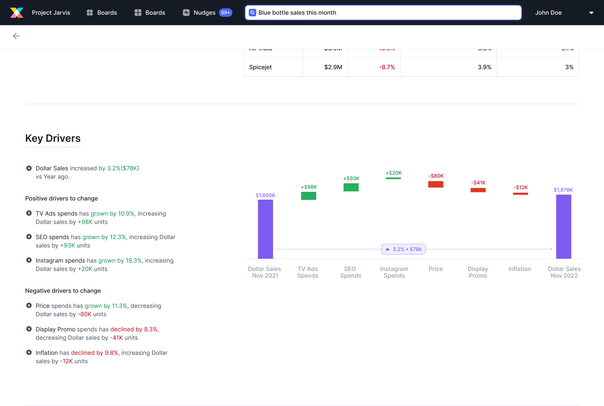
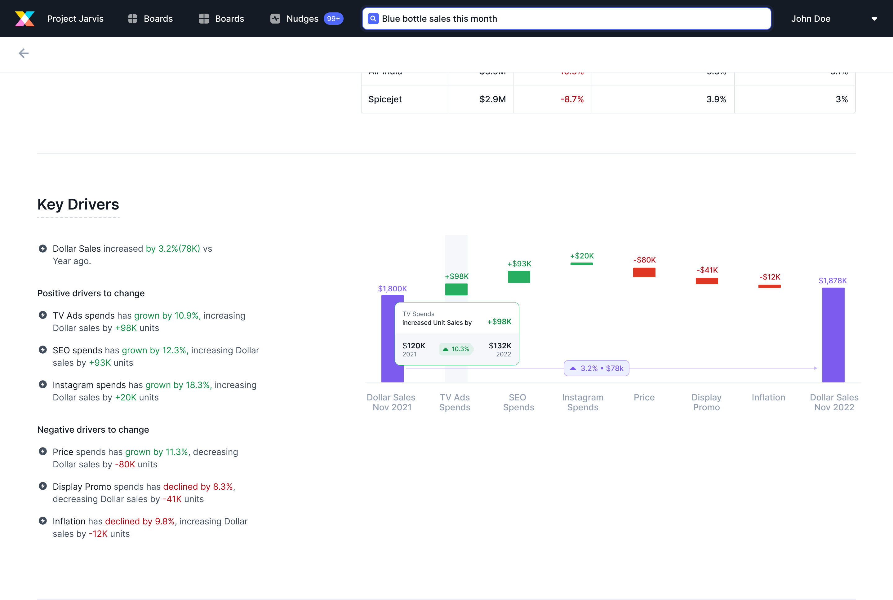
These changes made the chart's narrative obvious: the purple columns are what changed, the arrow quantifies that change, the coloured contributors explain why.
Tooltip design
Each contributor column needed a tooltip to show the spend breakdown behind the impact figure — what was spent in each year, the change, and what that drove for the metric.
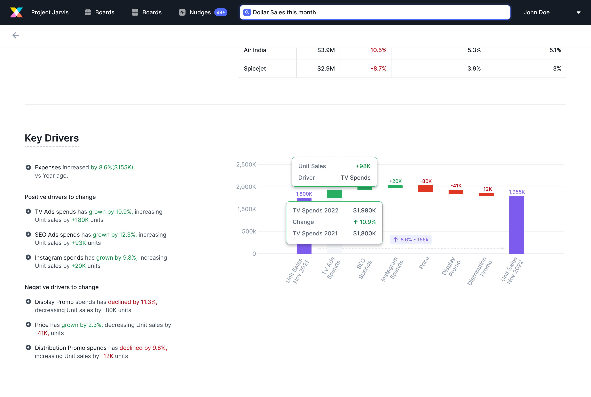
Tooltip on a contributor column — shows the year-over-year spend and the resulting impact on the metric
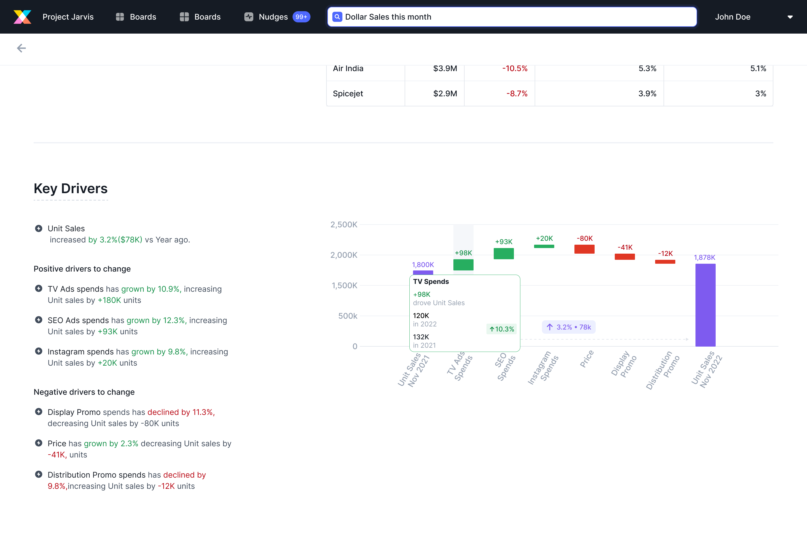
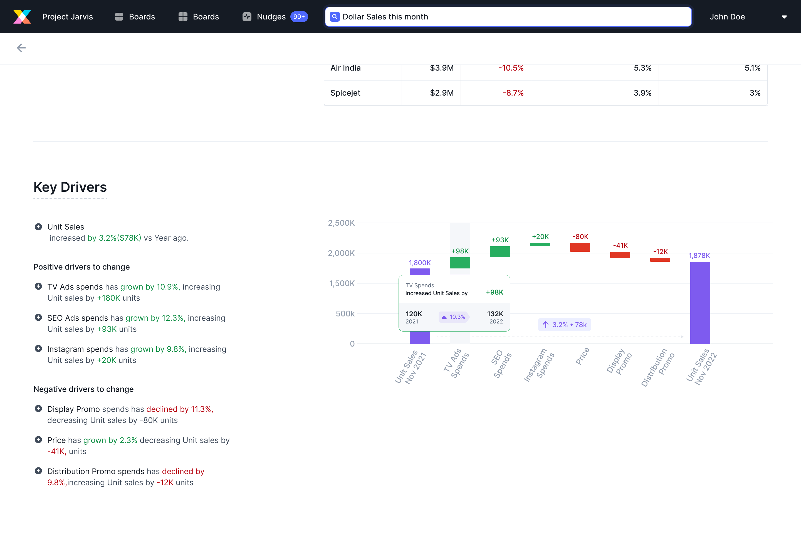
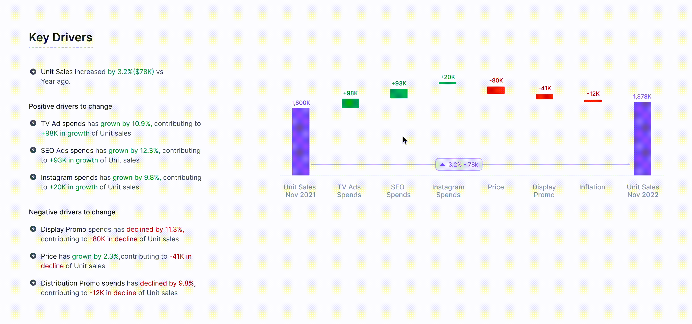
08 — Final Feature
Key Driver Analysis — the full picture
After two weeks of explorations, iterations, and testing, the final feature brought together three components that worked in concert:
The final feature in motion — waterfall chart, natural language panel, and tooltip all working together inside Crux
Waterfall visualisation
Positive contributors grouped on the left (green), negative on the right (red), with the start and end metric in purple. The net change is shown as a solid arrow with the % and dollar value attached — visually inseparable from the columns that explain it.
Natural language explanation
Alongside the chart, a plain-text breakdown lists exactly what happened: "TV Ads spend has grown by 10.9%, increasing Dollar sales by +88K." No chart literacy required — users who don't immediately read waterfall charts can still leave with the full story.
Contributor tooltip
Hovering any contributor column reveals the underlying spend data — this year vs. last year, the percentage change, and the resulting dollar impact on the metric. Every number is traceable.
Positive/negative separation
Contributors are grouped by direction, never interleaved. This was a deliberate decision to kill the false impression that factors happened in sequence — they're parallel causes, presented side by side.
09 — Learnings
What this project taught me
UI explorations take longer than you think — and that's fine
The reward at the end is proportional. When it finally comes together, it's genuinely satisfying in a way that shortcuts aren't.
Document your "why not" decisions
Every time you narrow down on a solution, write down why you rejected the alternatives. You'll need to advocate for your choices — and your team will challenge them.
Rabbit holes are real. The user's goal is the way out.
Visualisation design pulls you into endless aesthetic and technical tangents. Coming back to "can a user take information away from this quickly?" consistently cut through the noise.
Articulating the "why" makes you a better advocate
Taking 2–3 minutes before a design review to articulate why I made a particular visualisation decision changed how confidently I could defend it — and how often the team aligned with it.